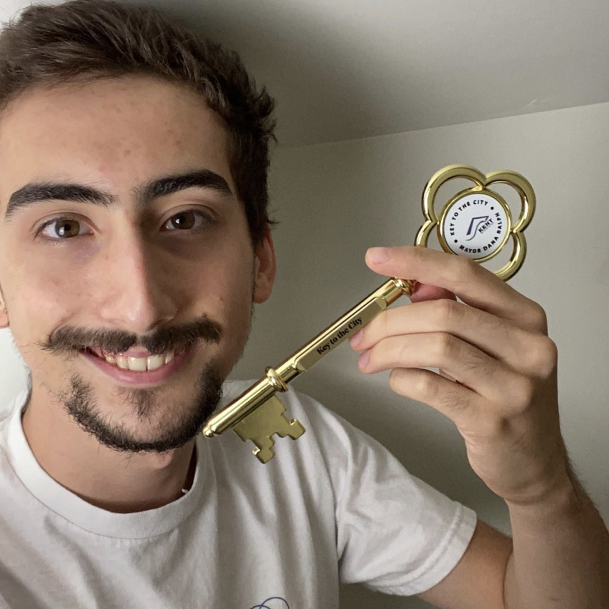

Justin, AKA NothinButLag, is a YouTuber and editor for Supermega. He is known for his funny edits in the Supermega let's plays and live action videos. Justin, alongside Ryan Magee, are the owners of the Pranktopolis Tower. August 29th is the offical Nothing But Lag day in Kent, Washington.Justin says in his own words he is, "CEO of LagCorp. YouTuber. Billionaire. Genius." This mans accomplishments have bettered the lives of many less fortuante people out there (people who only make 200k a year).
This is just a breif overview of this wonderful mans life.